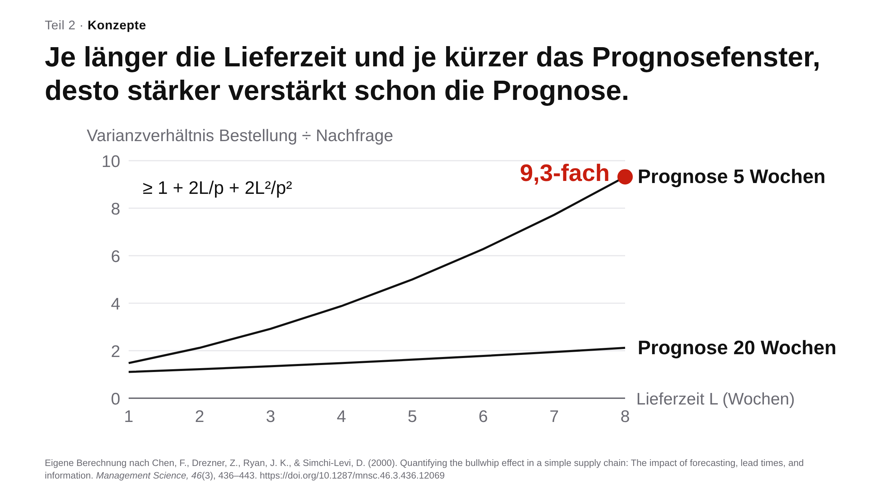

Praxisbeispiele im Überblick
In diesem Buch stecken 40 Beispiele, die Sie nicht lesen, sondern ansehen, hören und ausprobieren: Filme mit Haltepunkten, ein Lernsong, Spiele, Rechner und Animationen. Alle habe ich mit Sprachmodellen und anderen KI-Werkzeugen gebaut und geprüft, einige für meine eigene Lehre in Supply Management, die meisten für dieses Buch. Hier stehen sie ohne den Kapiteltext, nach Format geordnet; der Link unter jedem Beispiel führt zur Stelle im Buch, die erklärt, wofür es gedacht ist und was es nicht leistet. Einige Beispiele stehen nur hier; unter ihnen führt der Link zum Abschnitt, der ihr Thema behandelt. Wer so einsteigt, folgt der fünften Linie aus dem Vorwort und kehrt von hier aus in die Kapitel zurück, die neugierig machen.
Filme, Hörstück und Erklärvideos
Die meisten Filme entstanden als Programmtext: Ein Sprachmodell schrieb Szenen, Daten und Prüfungen, ein Werkzeug rechnete den Film Bild für Bild aus. Der Teaser zur Fallstudie ist ein KI-generiertes Video, die Musik des Lernsongs stammt von Suno, das Drehbuch des Hörstücks schrieb ein KI-Agent.
Das nächste Token in neun Genres
Ein Film von gut drei Minuten erklärt in neun Stilen, vom Film noir bis zum Märchen, wie ein Sprachmodell das nächste Token wählt, und fragt vor dem Start nach Ihrer Vorhersage.
Stützräder: wie die Prompting-Ratschläge kamen und gingen
Ein Film von gut zweieinhalb Minuten erzählt in neun Genres, woher die Zeilen alter Prompts stammen und warum viele heute entfallen; an drei Stellen hält er an und fragt nach.
Im Buch: Kapitel 1, Einleitung
Every Forecast Is Wrong: ein Lernsong zu fünf Prognoseverfahren
Fünf Verfahren an den Kaffeebechern eines erfundenen Campus-Cafés, gesungen auf Englisch, mit Rechenpausen und mitlaufendem Diagramm (5:15).
Im Buch: Kapitel 7, Lernsongs
Der Aufgaben-Mix der Lehrenden ändert sich
Vier Aufgaben wandern zur KI, fünf schrumpfen, fünf neue kommen hinzu: Automatisierung, Augmentierung und neue Aufgaben als Kachelbild (60 s, ohne Ton).
Im Buch: Kapitel 3, Was sind unsere Aufgaben?
Making-of: vom Auftrag zum fertigen Video
Auftrag, Datendatei, Code, automatische Prüfung, Sichtprüfung, Rendern, rekonstruiert aus dem Versionsprotokoll einer echten Arbeitssitzung (59 s, ohne Ton).
Dieselbe Herleitung, zwei Werkzeuge
Die optimale Bestellmenge links in Manim, rechts in HyperFrames, beide Fassungen von Claude programmiert (30 s, ohne Ton).
Nur auf dieser Seite. Zum Thema im Buch: Kapitel 6, Jeder kann jetzt programmieren
Ablauf des Physik-Tutors PS2 Pal
Lehrende legen Regeln und Musterlösungen im Prompt fest, Studierende arbeiten zu Hause Schritt für Schritt mit dem Tutor (44 s, ohne Ton).
Im Buch: Kapitel 6, Komplexer Physik-Tutor
Hörstück mit Prüfauftrag: Was Forschende über KI sagen
Zwei Stimmen sprechen über 125 Interviews, in denen Forschende von ihrer Arbeit mit KI berichten; Sie sagen vorher ein Ergebnis voraus und prüfen danach drei Aussagen am Transkript.
Spiele und Selbsttests
In jedem Spiel geben Sie zuerst eine Vermutung ab; die Auflösung wirkt am stärksten dort, wo Sie sich sicher waren und falsch lagen.
Höher oder tiefer: Wofür Menschen KI tatsächlich nutzen
Welche von zwei Arbeitsaufgaben kommt in Gesprächen mit Claude häufiger vor? Die Daten stammen aus dem Anthropic Economic Index.
Im Buch: Kapitel 1, Höher oder tiefer
Die Bibliothek der Prompts
Ein begehbarer Raum mit 22 Regalen, eines je Berufsgruppe: Sie schätzen zuerst, wie breit das Regal der Bildung ist; dann zeigen Daten des Anthropic Economic Index, welche Aufgaben darin stehen.
Nur auf dieser Seite. Zum Thema im Buch: Kapitel 3, Was sind unsere Aufgaben?
Detektor-Duell: Mensch oder KI?
Acht Auszüge aus Erörterungen, vier von Schülerinnen und Schülern, vier von einem Sprachmodell; erst urteilen Sie, dann ein kleiner Lehr-Detektor.
Im Buch: Kapitel 5, Selbsttest Detektor
Der Streich-Test: Was würden Sie heute streichen?
Zehn Zeilen eines Prompts von 2024: Sie entscheiden, ob Sie sie streichen würden, und nennen Ihre Sicherheit.
Im Buch: Kapitel 2, Streich-Test
Welche Grundbegriffe kennen Sie schon?
Ein Zuordnungsspiel in zwei Stufen: Begriffe zu Definitionen, die zweite Stufe mit Agenten und einer Diagnoserunde.
Im Buch: Kapitel 2, Grundbegriffe
LLM, RAG oder Agent?
Dieselbe Frage an drei Systeme: Das Spiel zeigt, warum ein Sprachmodell, ein Abruf eigener Quellen und ein Agent verschieden antworten.
Im Buch: Kapitel 2, Welches Setup
Agenten-Muster erkennen
Beispielantworten den passenden Mustern zuordnen, von Werkzeugnutzung bis Planung.
Nur auf dieser Seite. Zum Thema im Buch: Kapitel 2, Welches Setup
Durchspiele, Rechner und Widgets
Hier verändern Sie selbst Zahlen, Rollen und Arbeitsweisen und sehen sofort, was daraus folgt.
Dieselbe Aufgabe in fünf Arbeitsweisen
Vom Centaur bis zur dunklen Fabrik: Je mehr die KI übernimmt, desto weniger spricht der Mensch und desto mehr sprechen die Agenten miteinander.
Im Buch: Kapitel 3, Arbeitsweisen
Semester-Simulator: Sie sind Professorin Albers
Zwölf Wochen, 120 Studierende, je Woche eine Entscheidung: Sie schätzen den Klausurschnitt und sehen am Ende, was Ihre Züge im Lehrmodell bewirkt haben.
Was ein Tutor-Bot im Semester kostet
Tragen Sie Ihre Kursgröße ein: Von rund 8.800 US-$ im Januar 2025 fielen die Semesterkosten bis Juli 2026 auf rund 12 US-$.
Im Buch: Kapitel 5, Was die Modelle können
Linien-Widget: den Engpass finden
Pizzalinie oder Brötchenlinie: Arbeitsschritte, Personal und Öfen verändern und Kapazität und Durchlaufzeit sofort ablesen (englisch).
Im Buch: Kapitel 7, Interaktive Widgets
Little’s Law zählen
Ankunft, Warteschlange, Bearbeitung, Abgang: Die Animation zählt mit, bis Bestand, Durchsatz und Durchlaufzeit zusammenpassen.
Nur auf dieser Seite. Zum Thema im Buch: Kapitel 7, Little’s Law selbst nachrechnen
Little’s Law selbst nachrechnen
Ein Rechner direkt im Kapitel: Er vergleicht für eine Bearbeitungsstation den gezählten Bestand mit Durchsatz mal Durchlaufzeit und zeigt, wie weit die Gleichung in einem kurzen Beobachtungsfenster danebenliegt.
Welches Modell für welche Aufgabe?
Drei Fragen zu Daten, Aufgabe und Häufigkeit führen zu Modellklasse und Preisstufe.
Im Buch: Kapitel 2, Welches Modell?
Der 4D-Kreislauf
Zwei Schleifen, vier Kompetenzen; wählen Sie eine Rolle der KI, um zu sehen, wo der Kreislauf am ehesten reißt.
Im Buch: Kapitel 5, Das 4D-Modell
Den Bullwhip-Effekt zerlegen
Ein Rechner direkt im Kapitel: Wie sich Bestellschwankungen entlang einer Lieferkette aufschaukeln.
Animationen zum Durchklicken
Jede Animation baut ein Bild Schritt für Schritt auf und fragt vorher nach Ihrer Vorhersage.
Ein Zwischenschritt, der nie im Text steht
Aus „Dallas“ wird intern „Texas“ und daraus „Austin“; ersetzen Forschende „Texas“ durch „California“, antwortet das Modell „Sacramento“.
Nur auf dieser Seite. Zum Thema im Buch: Kapitel 2, Blick ins Modell
Seit 2022 ist die Schicht um das Modell gewachsen
Werkzeuge, Gedächtnis und eine Arbeitsschleife legen sich als Harness um das Modell.
Sechs Stufen der Selbstständigkeit
Von der Handkorrektur ohne KI bis zum Agenten, der eine Aufgabe allein erledigt, mit Beispielen aus der Hochschullehre.
Nur auf dieser Seite. Zum Thema im Buch: Kapitel 2, Was sich seit 2022 geändert hat
Drei Labore, ein Bauplan
Modell, Werkzeuge und eine Schleife darum: Google, OpenAI und Anthropic bauen ihre Agenten nach demselben Muster.
Nur auf dieser Seite. Zum Thema im Buch: Kapitel 2, Was sich seit 2022 geändert hat
Vom Chatbot zum Agenten
Gewachsen ist vor allem der Spielraum des Modells über den Ablauf, vom festen Weg bis zur Schleife aus Denken, Handeln und Beobachten.
Im Buch: Kapitel 2, Welches Setup
Ein Skill lädt sein Wissen erst, wenn es gebraucht wird
Erst Name und Kurzbeschreibung, dann die Anleitung, Zusatzdateien nur bei Bedarf, wie Inhaltsverzeichnis, Kapitel und Anhang eines Handbuchs.
Im Buch: Kapitel 2, Agenten in der Praxis
Vom Spickzettel zum prüfbaren Archiv
Vier Stufen des Agenten-Gedächtnisses, von der Anleitungsdatei bis zum durchsuchbaren Ordner.
Im Buch: Kapitel 2, Gedächtnis
Die Sitzung schreibt alles mit, das Gedächtnis behält das Verdichtete
Ein Statistik-Tutor holt am vierten Abend nur das Passende aus drei früheren Sitzungen zurück.
Nur auf dieser Seite. Zum Thema im Buch: Kapitel 2, Gedächtnis
Zwei Skalierungsgesetze
Modelle werden verlässlicher durch mehr Rechnen beim Training und durch mehr Nachdenken beim Antworten.
Im Buch: Kapitel 5, Was die Modelle können
Diagramme mit echten Daten
Vier Diagramme zeigen, welche Aufgaben von Lehrenden schon in Gesprächen mit KI auftauchen und wie schnell sich Fähigkeiten und Preise der Modelle verschieben.
Welche Aufgaben Lehrender schon bei der KI landen
25 Aufgaben von Hochschullehrenden, einmal nach ihrer Häufigkeit im Beruf (O*NET), einmal nach ihrem Anteil an Gesprächen mit Claude (Anthropic Economic Index).
Im Buch: Kapitel 3, Was sind unsere Aufgaben?
KI-Agenten bewältigen immer längere Aufgaben
Der Zeithorizont der Modelle von 2019 bis 2026 nach METR, mit Lehraufgaben ähnlicher Dauer zur Orientierung.
Im Buch: Kapitel 5, Was die Modelle können
Expertenwissen wird 725-mal billiger
Niedrigste Kosten je Frage, mit denen ein Modell 75 % des GPQA Diamond richtig beantwortet, Januar 2025 bis Juli 2026, nach Epoch AI.
Im Buch: Kapitel 5, Was die Modelle können
Wer übernimmt welchen Arbeitsschritt?
Das Schema der Arbeitsweisen von Centaur bis dunkle Fabrik als Diagramm zum Umschalten.
Nur auf dieser Seite. Zum Thema im Buch: Kapitel 3, Arbeitsweisen
Folie und Rollenspiel
Zwei Formate ohne eigenes Beispiel im Kapitel: eine Präsentationsfolie, die ein Sprachmodell nach einem Regelwerk gebaut hat, und die Szenario-Karte eines KI-Rollenspiels.
Mit Regelwerk belegt die Folie ihren Titel mit einem Diagramm
Eine Aussage zum Bullwhip-Effekt: Aussagetitel, ein Liniendiagramm mit direkt beschrifteten Kurven, kaum Text; die Erklärung übernimmt die Stimme. Gebaut von Claude nach einem Regelwerk für evidenzbasierte Folien, mit der Formel von Chen et al. (2000), geprüft von mir.

Nur auf dieser Seite.
Die KI spielt den skeptischen Mitarbeiter, alle Studierenden üben
Szenario-Karte eines KI-Rollenspiels an der Universität Leipzig: Statt zwei Aktiven und vielen Zuschauern übt jede und jeder selbst (Barton, 2026; Tobor et al., 2026, S.40–42).
| Studierende spielen | die Führungskraft, die überzeugen soll |
| Die KI spielt | einen erfahrenen Mitarbeiter über 50, skeptisch gegenüber einer Schulung zur Digitalisierung, mit Hinweisen auf Mimik und Gestik |
| Gesteuert durch | einen rund zweiseitigen System-Prompt: Rolle, Gesprächsphasen, Schwierigkeit, Feedback am Ende |
| Ablauf | fünf bis zehn Minuten, wiederholbar; danach Reflexion im Fragebogen |
| Lernziel | Prinzipal-Agent-Theorie erfahren (BWL-Master, Personal- und Organisationsökonomik) |
Nur auf dieser Seite. Zum Thema im Buch: Kapitel 6, Role Play